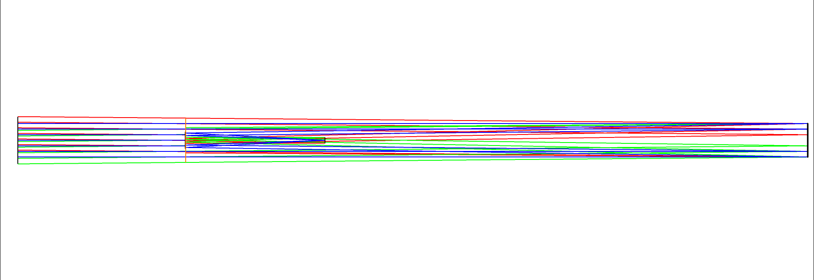
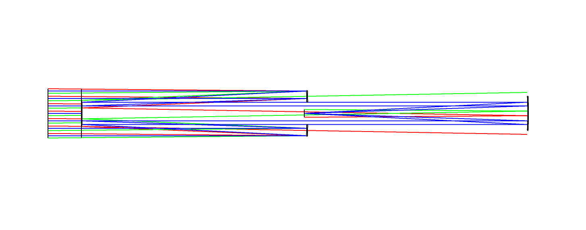

Comparative Design of Five Reflective Telescopes
In this project, I designed and compared five reflective telescope architectures in Zemax OpticStudio, all built to one shared specification: a two meter focal length at F/10, a one degree field, and a focal plane clear of the incoming beam by at least 20 mm. The five designs span the classic reflector families, Newton, Cassegrain and Ritchey-Chrétien on two mirrors, then Couder and Paul on three, each correcting a different combination of aberrations.
For each telescope I optimized the mirror prescriptions against a merit function built on Seidel aberration theory, then ran the same full characterization pipeline across all five: spot diagrams and encircled energy across the field, point spread functions, polychromatic MTF, and vignetting. I finished with a sensitivity analysis to find each design's worst offending tolerance, then a Monte Carlo simulation of manufacturing yield, so every design is backed by both an optical and a mechanical answer to how buildable it actually is.
No single telescope wins outright, and the comparison table below is built to show exactly why. The Ritchey-Chrétien gives the sharpest on-axis image of the group but a narrow usable field, the Newton and Cassegrain trade simplicity for coma off axis, and the three mirror Couder and Paul designs hold their correction across the widest field at the cost of throughput and size. Reasoning through that tradeoff, not just hitting a number, was the actual point of the project.
Newton

Parabolic primary, flat secondary at 45°. The simplest reflector of the five, and the only one with no aberration to correct on axis by construction. Full axial transmission, but coma and field curvature take over quickly off axis, that is the tradeoff for the simplicity.
Cassegrain

Concave hyperbolic primary, convex hyperbolic secondary, folded back through a hole in the primary. Excellent on axis, coma under 1 µm after optimization, in a compact 1.45 m package, but residual coma still shows up toward the edge of the field.
Ritchey-Chrétien

Both mirrors hyperbolic, tuned to cancel spherical aberration and coma at once. The sharpest on-axis image of the five, the spot stays entirely inside the Airy disk out to a 0.25° field. Contrast falls fast past about 1°, so the usable field stays narrow.
Couder

Two aspheric concave mirrors, correcting coma, spherical aberration and astigmatism at once. This 1928 design still holds up for wide field work, encircled energy stays even across the field, at the cost of a long 4.7 m footprint and heavy vignetting off axis.
Paul

Parabolic primary plus two spherical mirrors, the ancestor of modern off-axis three mirror telescopes. Best off-axis performance of the group by far, RMS spot drops to 0.7 µm at the edge of the field, but three reflections and a central obstruction cut throughput to under half.
Performance Comparison
Every design measured against the same criteria: image quality on and off axis, throughput, footprint, and how much the performance degrades once real manufacturing tolerances are applied.
| Criterion | Newton | Cassegrain | Ritchey-Chrétien | Couder | Paul |
|---|---|---|---|---|---|
| On-axis correction | corrected | corrected | corrected | corrected | residual spherical |
| Main off-axis limit | coma, astigmatism | coma, field curv. | astigmatism | field curvature | tangential coma |
| Spot RMS, axis / edge (µm) | 8.0 / 12 | 9.0 / 13 | 6.5 / 9 | 3.6 / 1.7 | 3.2 / 0.7 |
| Encircled energy, 80% (µm) | 15 | 13 | <10 | 16.2 | 21.7 |
| MTF (f @ 0.4), axis / edge (cy/mm) | 70 / 35 | 70–80 / 40 | 90+ / 30 | 100+ / 44 | 90+ / 35 |
| Axial transmission | 100.0% | 93.6% | 93.6% | 76.6% | 43.8% |
| Footprint (mm) | — | 1450 | 1450 | 4707 | 2152 |
| Tolerancing RMS shift (µm) | 2.0 | 0.4 | 2.0 | 2.3 | 2.0 |
Commentary
- Newton : The simplest of the five and the only one at full transmission with the smallest footprint, but performance drops fast off axis, coma dominates the moment you leave the center of the field.
- Cassegrain : Corrects on-axis aberrations well and stays compact and easy to tolerance, though tangential defects remain once you move off axis.
- Ritchey-Chrétien : The best on-axis image quality of the group, coma and spherical aberration corrected by design, but contrast drops fast past about half a degree, which keeps its usable field narrow.
- Couder and Paul : More complex and bulkier, but both hold good performance across the full field, Paul especially, which is fully anastigmatic. That comes at a real cost though, throughput falls sharply from the central obstruction and the extra mirror.
- Bottom line : Paul wins hardest at the edge of the field, at the cost of just 43.8% throughput. Couder is the better compromise for wide fields, correcting field curvature effectively while giving up less transmission.